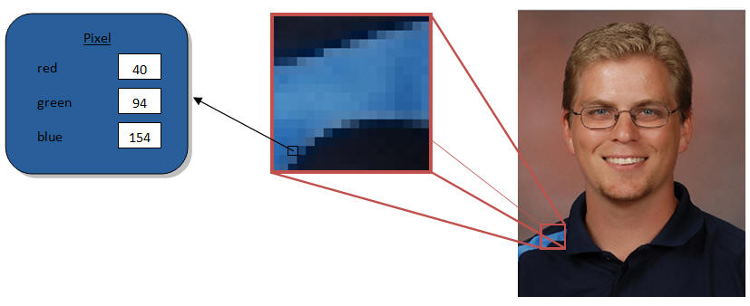
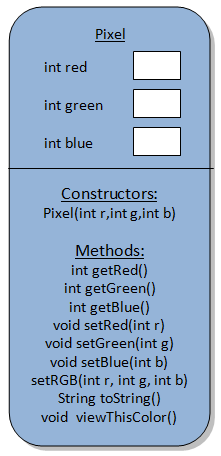

Image Processing
How images are stored in a computer:
One way that images are represented in data is as
an array of Pixels. A Pixel is a tiny single location that is one color. Since a
pixel is tiny, combining thousands of them in a 2-Dimensional array causes a
picture to display. The color that each pixel displays is determined by
three ints that represent the levels of Red, Green, and Blue.

You are going to be manipulating pictures, but in order to do that, you need to
be familiar with two classes:
 |
The Pixel Class: Constructors: Methods: |
|
Pixel[][] and the Picture class The Picture class has some built-in ability to generate Pixel arrays from a loaded Picture object and to create a new Picture from a Pixel[][] 1) Get a Picture object using either loadFromJar or loadFromFile. Most people will use the Picture of Mr. Sacco stored in the jar: Picture pic = Picture.loadFromJar("Sacco.png");
If you would like your own image, save it to your project folder and use
loadFromFile instead of loadFromJar2) Call the getPixelArray method to get a Pixel[][] assosciated with that image: Pixel[][] pixels = pic.getPixelArray();Now pixels contains the Pixels that match up with the "Sacco.png" image. How to go from a Pixel[][] to a Picture for viewing purposes 1) Construct a Picture object using the Pixel[][] as the parameter Picture newPic = new Picture(pixels); 2) Use the display method to show the Picture in a window newPic.display(); |
Assignment:
Create a class named ImageProcessors which will contain a series of static void methods designed to take an image and perform some action on it. You should use the methods of the Picture class to get an array of Pixels, then traverse through that array and fill a new array with modified Pixels. Once you have a new array, use it to construct a Picture and display it.
For Example: The blackAndWhite method below takes the average of the Red, Green, and Blue values
| public static void
blackAndWhite() { //use the loadFromJar method to get a Picture for Sacco.png Picture myPic = Picture.loadFromJar("Sacco.png"); //use the getPixelArray method to get a Pixel[][] for Sacco.png Pixel[][] original = myPic.getPixelArray(); //create a new array to hold the result Pixel[][] newPixels = new Pixel[original.length][original[0].length]; //loop through every possible pixel for(int row =0; row< original.length;row++) { for( int col =0; col < original[0].length; col++) { //grab the current pixel Pixel origPixel = original[row][col]; //extract the red, green, and blue values int red = origPixel.getRed(); int green = origPixel.getGreen(); int blue = origPixel.getBlue(); //calculate the average int average = (red+green+blue)/3; //construct a new Pixel with the average as its red, green, and blue newPixels[row][col] = new Pixel(average,average,average); } } //now that newPixels has been populated, construct using the array and display it Picture newPic = new Picture(newPixels); newPic.display(); } |
Methods:
|
public static void negative() This method will display the negative of an image. To obtain the negative of an image, subtract each Pixel's Red, Green, and Blue value from 255 and that will become the new value. For Example: [R:120,G:45,B:200] would become [R:135,G:210,B:55] |
|
|
public static void mirrorImage() This method will display the vertical reflection of the image. To obtain the mirror image of an image, the Pixel in the first column must be placed in the same row in the last column, the Pixel in the second column is placed in the second to last column, and so on… |
|
|
public static void threshold(int thresh) The threshold method will take in an int as a parameter. For each Pixel, calculate the average of the Red, Green, and Blue values. If the average is less than the parameter, put a black pixel (0,0,0) at that location. Otherwise, put a white Pixel there (255,255,255) The example has a threshold of 95 |
|
|
public static void sepiaTone() In order to get a sepia tone, each Pixel’s Red,
Green, and Blue values will depend on portions of the original’s Red,
Green, and Blue values. Use the formulas below: Warning: These formulas can give an int that is larger than 255. In that case, set the value to 255 instead. |
|
|
public static void blur() In order to blur an image each Pixel’s value, its
Red Green and Blue values each need to be set to the average of it and
the surrounding Pixels.
Most of the Pixels have 8 surrounding, but don’t forget about the ones
on the edges. |
|
| ???????? |
public static void secret() Mr. Sacco has hidden a secret image within his portrait. Any Pixel that belongs to the secret image has an ODD red value, while the unimportant Pixels have an EVEN red value.
|